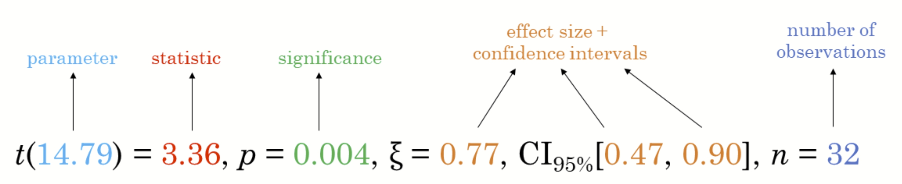
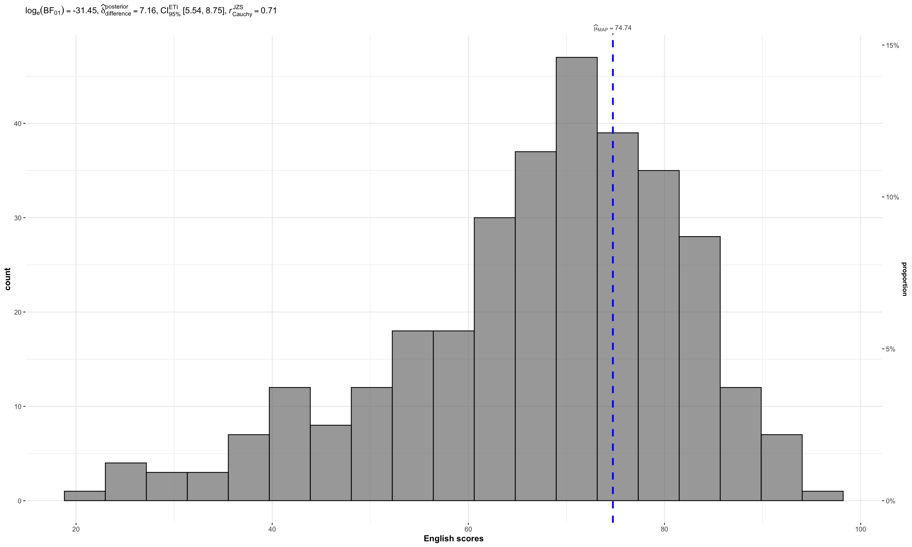
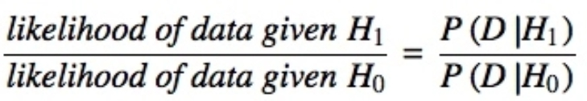
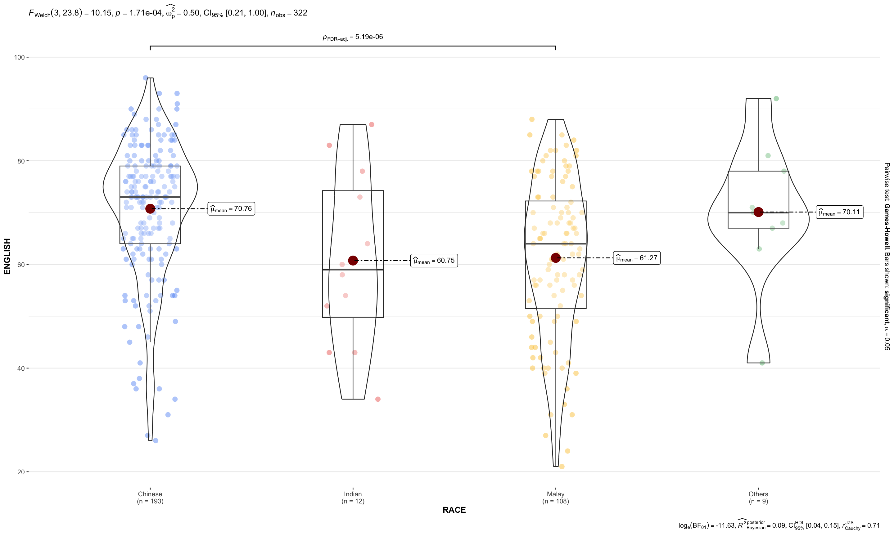
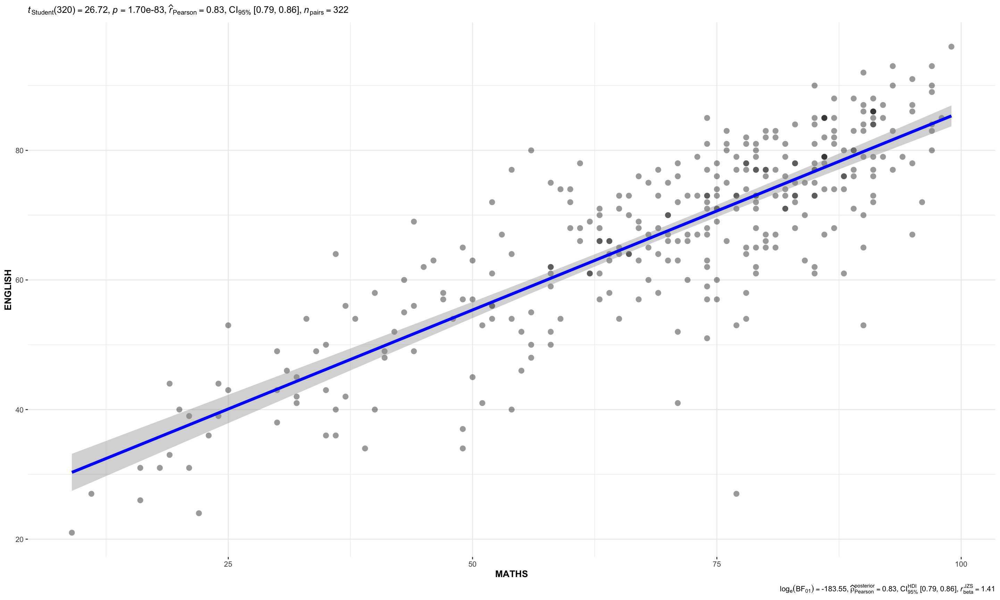
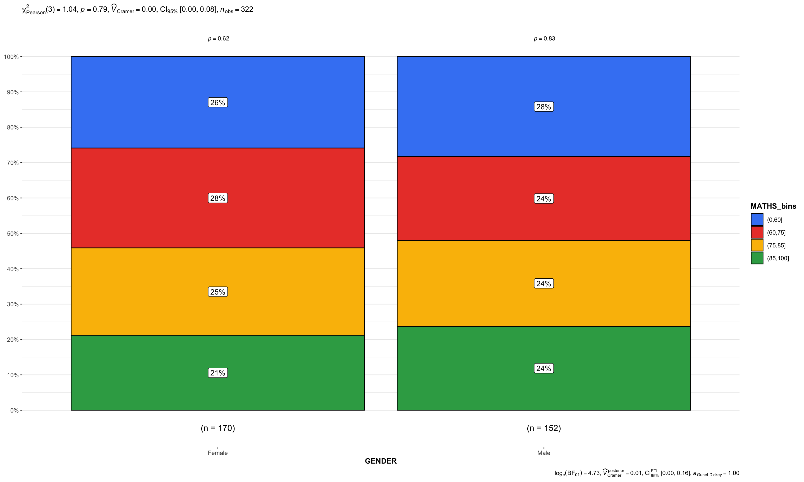

Show code block
pacman::p_load(ggstatsplot, tidyverse)In this hands-on exercise, I gained experience in:
ggstatsplot to create visualisations with rich statistical insightsperformance to assess and visualise model diagnosticsparameters to interpret and visualise model parametersggstatsplot  is an extension of ggplot2 package for creating graphics with details from statistical tests included in the information-rich plots themselves.
is an extension of ggplot2 package for creating graphics with details from statistical tests included in the information-rich plots themselves.
- To provide alternative statistical inference methods by default.
- To follow best practices for statistical reporting. For all statistical tests reported in the plots, the default template abides by the [APA](https://my.ilstu.edu/~jhkahn/apastats.html) gold standard for statistical reporting. For example, here are results from a robust t-test:
In this exercise, ggstatsplot and tidyverse will be used.
pacman::p_load(ggstatsplot, tidyverse)exam <- read_csv("Hands-on Exercises/Hands-on W1/Exam_data.csv")In the code chunk below, gghistostats() is used to to build an visual of one-sample test on English scores.

set.seed(1234)
gghistostats(
data = exam,
x = ENGLISH,
type = "bayes",
test.value = 60,
xlab = "English scores"
)Default information: - statistical details - Bayes Factor - sample sizes - distribution summary
A Bayes factor is the ratio of the likelihood of one particular hypothesis to the likelihood of another. It can be interpreted as a measure of the strength of evidence in favor of one theory among two competing theories.
That’s because the Bayes factor gives us a way to evaluate the data in favor of a null hypothesis, and to use external information to do so. It tells us what the weight of the evidence is in favor of a given hypothesis.
When we are comparing two hypotheses, H1 (the alternate hypothesis) and H0 (the null hypothesis), the Bayes Factor is often written as B10. It can be defined mathematically as

A Bayes Factor can be any positive number. One of the most common interpretations is this one—first proposed by Harold Jeffereys (1961) and slightly modified by Lee and Wagenmakers in 2013:
| Bayes Factor | Interpretation |
|---|---|
| > 100 | Extreme evidence for H1 |
| 30 – 100 | Very strong evidence for H1 |
| 10 – 30 | Strong evidence for H1 |
| 3 – 10 | Moderate evidence for H1 |
| 1 – 3 | Anecdotal evidence for H1 |
| 1 | No evidence |
| 1/3 – 1 | Anecdotal evidence for H0 |
| 1/10 – 1/3 | Moderate evidence for H0 |
| 1/30 – 1/10 | Strong evidence for H0 |
| 1/100 – 1/30 | Very strong evidence for H0 |
| < 1/100 | Extreme evidence for H0 |
In the code chunk below, ggbetweenstats() is used to build a visual for two-sample mean test of Maths scores by gender.

ggbetweenstats(
data = exam,
x = RACE,
y = ENGLISH,
type = "p",
mean.ci = TRUE,
pairwise.comparisons = TRUE,
pairwise.display = "s",
p.adjust.method = "fdr",
messages = FALSE
)“ns” → only non-significant
“s” → only significant
“all” → everything
Following (between-subjects) tests are carried out for each type of analyses:
| Type | No. of groups | Test |
|---|---|---|
| Parametric | > 2 | Fisher’s or Welch’s one-way ANOVA |
| Non-parametric | > 2 | Kruskal–Wallis one-way ANOVA |
| Robust | > 2 | Heteroscedastic one-way ANOVA for trimmed means |
| Bayes Factor | > 2 | Fisher’s ANOVA |
| Parametric | 2 | Student’s or Welch’s t-test |
| Non-parametric | 2 | Mann–Whitney U test |
| Robust | 2 | Yuen’s test for trimmed means |
| Bayes Factor | 2 | Student’s t-test |
Following effect sizes (and confidence intervals/CI) are available for each type of test:
| Type | No. of groups | Effect size | CI? |
|---|---|---|---|
| Parametric | > 2 | η²p, η², ω²p, ω² | Yes |
| Non-parametric | > 2 | η²H (H-statistic based eta-squared) | Yes |
| Robust | > 2 | ξ (Explanatory measure of effect size) | Yes |
| Bayes Factor | > 2 | No | No |
| Parametric | 2 | Cohen’s d, Hedge’s g (central- and noncentral-t distribution based) | Yes |
| Non-parametric | 2 | r (computed as Z/√N) | Yes |
| Robust | 2 | ξ (Explanatory measure of effect size) | Yes |
| Bayes Factor | 2 | No | No |
Here is a summary of multiple pairwise comparison tests supported in ggbetweenstats:
| Type | Equal variance? | Test | p-value adjustment? |
|---|---|---|---|
| Parametric | No | Games-Howell test | Yes |
| Parametric | Yes | Student’s t-test | Yes |
| Non-parametric | No | Dunn test | Yes |
| Robust | No | Yuen’s trimmed means test | Yes |
| Bayes Factor | NA | Student’s t-test | NA |
In the code chunk below, ggscatterstats() is used to build a visual for Significant Test of Correlation between Maths scores and English scores.
ggscatterstats(
data = exam,
x = MATHS,
y = ENGLISH,
marginal = FALSE
)
In the code chunk below, the Maths scores is binned into a 4-class variable by using cut().
exam1 <- exam %>%
mutate(MATHS_bins =
cut(MATHS,
breaks = c(0, 60, 75, 85, 100))
)In this code chunk below, ggbarstats() is used to build a visual for Significant Test of Association.
ggbarstats(exam1,
x = MATHS_bins,
y = GENDER)